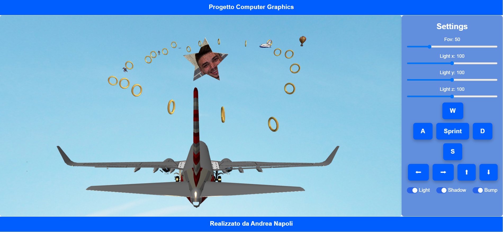

Andrea Napoli - 0001136753
Laurea Magistrale in Informatico A.A. 2023/2024
Per il corso di Computer Graphics è stato sviluppato un progetto che mira a combinare le competenze acquisite durante il corso con l'utilizzo pratico delle tecnologie moderne di grafica 3D. Il progetto consiste nella realizzazione di una scena tridimensionale interattiva in cui un aereo si muove all'interno di una skybox, attraversando vari oggetti 3D come anelli, dirigibili, mongolfiere e altri elementi di scenario. Tutti questi elementi sono in formato obj e vengono caricati con un metodo specifico. Il progetto è stato sviluppato con HTML, CSS e Javascript con il contesto WebGL.
All'interno della repository del progetto sono presenti due cartelle:
L'interfaccia è composta da un header, un footer e al centro è divisa in due parti: a sinistra c'è la finestra di canvas che mostra il funzionamento del progetto e sulla destra è presente un menù laterale che contiene i comandi utilizzabili per muoversi all'interno dello scenario.
All'interno del menù possiamo trovare i seguenti comandi:
Aggiungiamo inoltre che una valida alternativa alle freccette per muovere la telecamera nello scenario è l'utilizzo del mouse.
La funzione loadObj è la funzione principale del progetto che si occupa di caricare e visualizzare gli oggetti 3D partendo dal file obj. il funzionamento generale può essere suddiviso in diverse parti:
Sono state implementate due feature opzionali:
Entrambe le tecniche utilizzate sono state implementate e gestite all'interno del fragment shader (fs). Le due tecniche di rendering avanzato presenti all'interno del progetto sono l'abilitazione delle ombre e l'abilitazione dell'effetto bump mapping.